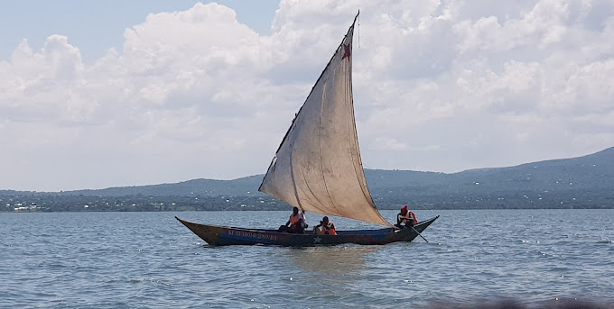

- Tilapia
- Nailpach


- Ferry
Ferry is used to move from luanda kotieno to mbita
it coasts 150ksh per passanger and at least 900ksh for a car.
it takes a duration of 45 munites to doc at mbita - Water bus


same as ferry water bus moves from luanda to mbita and back for it the difference with ferry is that it carries only passangers and a few mottorcycles
it coasts 150ksh per person
it takes a duration of 30 munites to doc at mbita - speed boat commonly known as chopa in the region
the speed boat move from lunda to mbita in a duration of ten to twenty minutes it depends with the power propelling it and it coasts 200ksh
it only carries passangers ,a number of abot ten passangers or less - boats
the boats are propelled by some sort of ingines
it coasts 200 per passanner they are also available for hire
it takas about thirty minutes to reach Mbita - sailinng boats-which were used years ago before invetion of other ingine propeled vessels

- selling omena in the fish market and in the market near the ferry dorking place
- shop bussiness
- fuel bussiness
- kiosks and stols